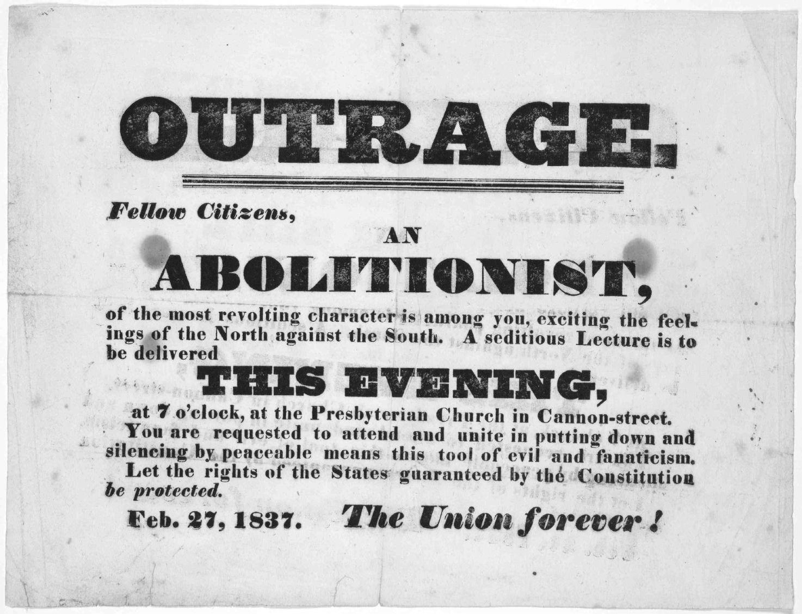

| Field | Detail |
| TOC Fit | Chapter 8 · Essay prompt 8.4 (Did Workers Become a Class?); Essay prompt 12.3 (Who Drove Abolitionism?) |
| Why Here | A printed call for townspeople to gather and “silence” an abolitionist speaker at a local church. Students can weigh how northern opponents of abolition joined appeals to the Union, the Constitution, and states’ rights against antislavery agitation, and what that reveals about divisions among ordinary northerners. |
| Treatment | Public-domain broadside; complete text |
In the mid-1830s the American Anti-Slavery Society, founded in 1833, sent dozens of traveling lecturers into northern towns to win converts to immediate emancipation. Their meetings, usually held in churches, often met hostile crowds. Between 1834 and 1838 mobs attacked abolitionist speakers and meeting places in New York, Philadelphia, Boston, Utica, Cincinnati, and many smaller places; in November 1837 the antislavery editor Elijah Lovejoy was killed defending his press in Alton, Illinois. Many anti-abolition crowds were led or encouraged by merchants, lawyers, and other “gentlemen of property and standing,” who feared that agitation would disrupt trade with the South and endanger the Union, but working men also joined them, often voicing fears of racial equality and of competition from free Black workers. Handbills like this one, posted the day of a lecture, were a common way of calling such crowds together. Editorial note. The Norton Source Collection prints this handbill from the Library of Congress copy; this reader reproduces the complete text from the Library of Congress’s own transcription of the same handbill (Printed Ephemera Collection), checked against its page image. Norton’s credit line dates the handbill February 2, 1837, but the printed date line reads “Feb. 27, 1837.” The Library of Congress catalogs the handbill only as printed in New York; some secondary descriptions place it in Poughkeepsie, where a Presbyterian church stood on Cannon Street, but this should be treated as unconfirmed. Line breaks and display type (the capitalized words were set in large type) are not reproduced. The image itself should be printed with the text so that students can see how it was designed to be read at a glance. CAUTION: The handbill’s author is unknown, and it does not tell us who actually attended or what happened at the lecture. |
|
 |
|
UNIT 3 · AN EXPANDING NATION | HISTORY B17A | DANIEL GARZA, M.A.
|